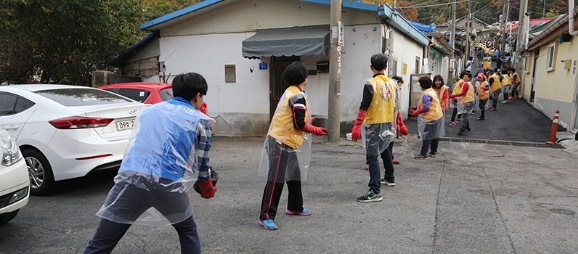
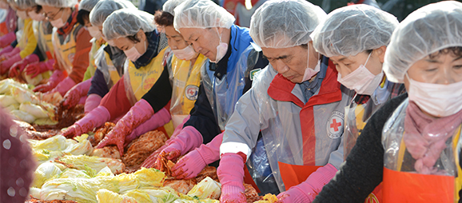
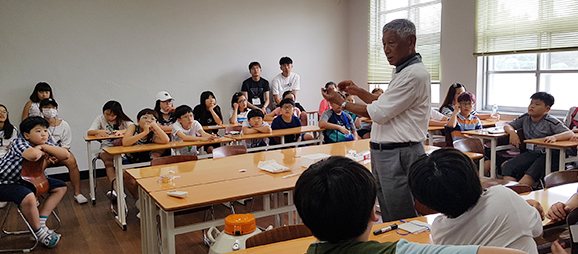
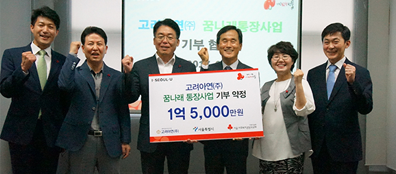
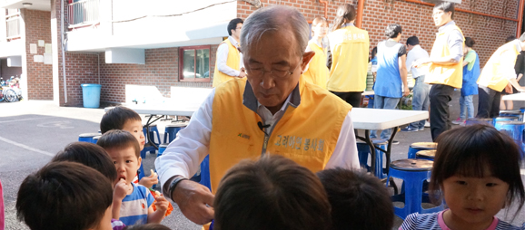
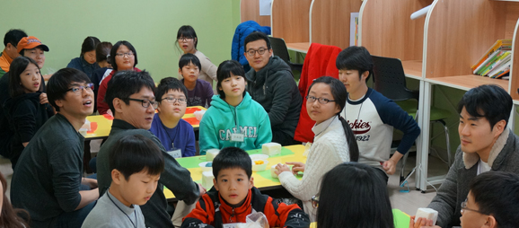
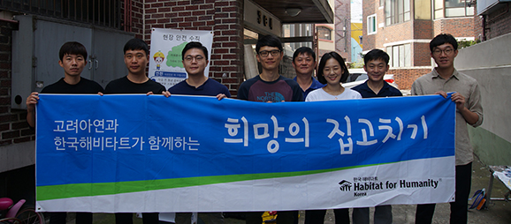
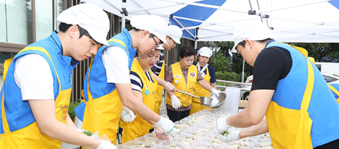

나눔경영
상생과 협력의 동반성장, 모두가 행복한 세상
고려아연 나눔경영이 함께 하고자 하는 길입니다.
고려아연은 우리나라 경제발전에 이바지하는데 그치지 아니하고
‘모두가 행복한 세상’을 만들기 위해 다방면에 걸친 후원 및 봉사활동을 실천함으로써
기업의 사회적 책임을 다하고 있습니다.
- 종합 사회복지사업
-


사랑의 도시락, 사랑의 징검다리, 사랑의 연탄나눔, 사랑의 김장, 북한이탈주민돕기, 일본지진돕기,
연평도 위문행사지원, 조손가정돕기 등을 통해 소외된 이웃과 사랑을 나누고 있습니다. - 장학사업
-


덕신초등학교, 온산중학교 등과의 1사 1교 후원 및 경원문화재단을 통한 대학생 장학금 지원을 비롯하여 대한적십자사의 희망씨앗 장학사업, 서울시 꿈나래통장사업 등 다양한 장학사업에 참여하여 아동, 청소년들이 밝은 미래를 꿈꿀 수 있도록 아낌없이 지원하고 있습니다.
- 아동복지사업
-


도서산간지역에 생태환경꾸미기, 도서관꾸미기를 지원함으로써 아이들의 꿈과 희망을 키우는데 힘쓰고 있습니다.
- 불우이웃 지원사업
-


국내외 어려운 이웃들을 위해 희망의 집짓기, 희망의 집고치기, 희망의 빌리지 사업 등 거주지원 사업도 하고 있습니다. 또한 다문화가정, 미혼모, 장애인 등 도움이 필요한 이웃들을 위한 후원을 아끼지 않고 있으며, 환경보호에도 일조하고 있습니다.